乐学编程¶
本书介绍¶
本书的用户
本书针对没有编程知识的用户，采用项目制的方式来引导他们去一步步走进编程的大门。
除了JavaScript基本语法外，本书更多的设计到了项目开发中的方方面面，从最基础的计算机图形，到贴图与动画，到项目开发流程，涉及到了编程领域的多个纬度。
学习环境
在学习过程中，添加了大量的实例。本书的所有例子都在LeapLearner IDE环境下测试通过，浏览器为Chrome 61.0.3163.100 (64 位)。
目录¶
[TOC]
开发环境¶
本课程可以在任意浏览器环境下进行，需要引入库文件。
基本绘图函数¶
以下函数只执行绘制命令，不会创建对象，因此无法获得对应的属性
基本形状¶
说明：前面加*的参数表示可选参数，除color是字符串参数外，其他参数均为数值参数。
| Code | Shape |
| ---------------------------------------- | --------------------------------- |
| rectangle(x, y, w, h, *color)
*color - 可选，颜色字符串 | |
| circle(x, y, r, *color)
| |
| line(x1, y1, x2, y2, *color)line(x1, y1, x2, y2, *lineWidth, *color) | 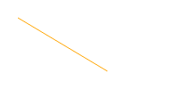 |
| point(x, y, *color) | 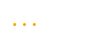 |
| triangle(x1, y1, x2, y2, x3, y3, *color) | 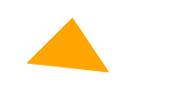 |
| polygon(x1, y1, x2, y2, x3, y3, ..., *color) | |
| ellipse(x, y, rX, rY, *color) | |
图片¶
| Code | Result |
| ------------------------ | ------ |
| image(src, x, y, w, h) | |
基本图形¶
基本图形是所有画面展示的基本单位，通过基本图形的组合，我们可以创造出许许多多丰富的图案，做出漂亮的动画。
坐标简介¶
坐标系统¶
为了定义空间的位置，数学家们发明了坐标的概念，在此至上发展出了庞大的几何学科。在计算机图形中，坐标系统更是不可或缺。
我们将左上角的坐标定义为(0,0)，把水平轴为x轴，把垂直坐标定义为y轴。平面上的任意一个点，在x轴上的投影称之为该点的x坐标，同样，在y轴上的投影即y坐标。因此，整个坐标系看起来像是这个样子的。

屏幕坐标¶
只要确定了坐标点的值，我们就能很容易的确定坐标的位置了。比如点（250，150）在坐标轴上的位置，我们就可以很容易找出来了。
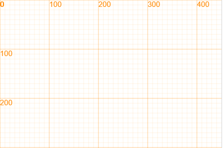
小知识：笛卡尔坐标系和网页坐标系
和数学上常见的笛卡尔坐标系不同的是，网页坐标系的y轴正方向朝下。这是因为人类阅读习惯于从左到右，从上到下，在浏览器的定位系统中，根据这个习惯来定义坐标的位置，使得在网页设计时更为合理。
矩形¶
长方形和正方形，统称为矩形，在数学描述中，矩形是如下的图形：相邻的两边相互垂直，而不相邻的两边平行且长度相等。

要在画布上准确的描述一个矩形的位置和大小，我们需要以下属性
- 矩形左上角的位置
(x, y) - 矩形的宽度
width和高度height
那么，矩形就可以用以下表达式来定义。
Rectangle(x, y, width, height);
只要我们指定矩形所有的属性值，就可以定义出矩形的位置和大小。在Canvas中，我们使用以下代码来创建一个矩形。
var rect = new Rectangle(10, 10, 100, 50);
rect.draw();
第一行，我们定义了一个变量rect，代表了一个矩形，它的左上角顶点坐标是(10, 10)，宽度是100，高度是50。
第二行，我们执行了rect的一个方法draw()，将这个矩形画在了画布上，点击Run就可以看到一下效果：

图中这个浅蓝色的方块就是我们的rect矩形。
如果我们修改rect的属性值，再点击运行，就可以看到不同效果的矩形，快动手试一下吧。
改变矩形的属性¶
在定义rect后，我们可以通过rect.x来修改rect左上角顶点的x坐标
var rect = new Rectangle(10, 10, 100, 50);
rect.x = 200;
rect.draw();
同样，修改rect.y，rect.width，rect.height也将会相应调整矩形的位置和形状。
小知识：像素
在计算机中，距离的单位往往是以像素作为单位的。1个像素即是显示器上的最基础一个发光原件，我们常说的分辨率就是指屏幕上发光原件的数量。
取值和赋值
属性值可以直接读取，使用点操作符(.)即可读取矩形的属性值。如果要修改矩形的属性值，则要使用赋值操作符(=)。我们来看下面这个例子。
var rect = new Rectangle(10, 10, 100, 50);
rect.height = rect.height + 50;
rect.draw();
注意第二行，我们先读取了矩形的高度(第二个rect.height)，然后将这个高度增加50，最后将新的值赋给了矩形(第一个rect.height)。最终，矩形的高度变为100，在我们的画布中显示出来的便是一个高度为100的矩形。
画线和填充¶
对矩形来说，拥有四周的边和占据的面积这两个属性。我们在绘制的时候，可以选择只绘制四条边，或者只填充矩形的面积，分别使用stroke和fill方法来区分。如果需要同时绘制，可以直接使用draw方法。
实例：画线和填充¶
在这个例子中，我们将使用不同的方式来绘制矩形，
var rect = new Rectangle(10, 10, 100, 50);
rect.styleStyle = "red";
rect.stroke();
rect.y = 110;
rect.fill();
rect.y = 210;
rect.draw();
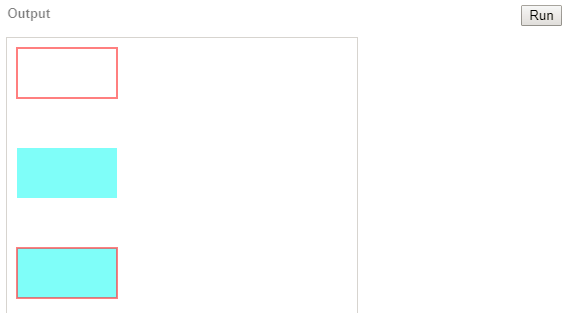
矩形除了以上属性外，还有一些属性值和方法，所有矩形相关的属性和方法都列在下方。
属性值¶
| 属性值 | 说明 |
| ------------- | ------------- |
| x | 获取或设置左上角顶点的x值 |
| y | 获取或设置左上角顶点的y值 |
| width | 获取或者设置矩形的宽度 |
| height | 获取或者设置矩形的高度 |
| strokeStyle | 获取或者设置矩形边的样式 |
| fillStyle | 获取或者设置矩形填充的样式 |
| lineWidth | 获取或者设置线条的宽度 |
| ... | 其他通用属性参照 |
实例：绘制绿色矩形¶
我们希望绘制一个绿色矩形，它的左上角顶点是（100，100），它的颜色是绿色，不需要画出矩形的边。
var rect = new Rectangle(100, 100, 200, 50);
rect.fillStyle = "green";
rect.fill();
方法¶
我们注意到，在使用方法时，我们需要在方法的后面增加括号（）。这是告诉计算机，我们要执行这个动作了。矩形拥有了以下一些基本方法，有了这些方法，我们就可以按照我们的想法来使用矩形了。
| 方法 | 用法 |
| ---------- | -------------------------------- |
| draw() | 将矩形画在画布上 |
| fill() | 填充矩形，默认样式为rgba(255, 255, 0, 0.5) |
| stroke() | 绘制矩形的四条边，默认样式为#FFFF00 |
圆¶
类似于矩形，创建一个圆也是非常简单的一件事情。
var circle = new Circle(x, y, r);
circle.draw();
和矩形一样，圆是一个封闭的图形。对圆而言，确定圆心和圆的半径，即可确定圆的位置和大小。

属性值¶
| 属性值 | 说明 |
| ------------- | ------------ |
| x | 获取或设置圆心的x值 |
| y | 获取或设置圆心的y值 |
| r | 获取或者设置圆的半径 |
| strokeStyle | 获取或者设置圆周的样式 |
| fillStyle | 获取或者设置圆填充的样式 |
| lineWidth | 获取或者设置线条的宽度 |
半径是圆特有的属性，是直径的一半。圆并没有宽度和高度，如果你想从圆的属性中找出高度和宽度，那你会非常失望的。
方法¶
圆的方法和矩形类似，按照绘制的内容进行区分。
| 属性值 | 用法 | | -------- | ---------------------------------------- | | draw() | 将圆画在画布上，包含圆周和内部 | | fill() | 仅填充圆，不绘制圆周，默认样式为"rgba(255, 255, 0, 0.5)" | | stroke() | 绘制圆周，不填充圆，默认样式为"#FFFF00" |
实例：绘制雪人I¶
我们先定义了一个函数drawCircle，它能直接修改圆的位置、半径、颜色，并将圆画出来。利用这个函数，我们可以快速的将雪人绘制出来。
var circle = new Circle();
function drawCircle(x, y, r, c){
circle.x = x;
circle.y = y;
circle.r = r;
circle.fillStyle = c;
circle.draw();
}
drawCircle(200, 400, 100, "white");
drawCircle(200, 280, 60, "white");
drawCircle(180, 270, 10, "black");
drawCircle(220, 270, 10, "black");
实例：绘制雪人II¶
我们还可以使用另外一种方式，将雪人不同部位都定义好。我们定义了雪人的头，雪人的身体，雪人的眼睛。掌握坐标后，我们很容易就可以将这个雪人画出来了。
var bg = new Rectangle(0, 0, 350, 550);
var head = new Circle(200, 280, 60);
head.fillStyle = "white";
var body = new Circle(200, 400, 100);
body.fillStyle = "white";
var eye = new Circle(180, 270, 10);
eye.fillStyle = "black";
bg.draw();
body.fill();
head.draw();
eye.fill();
eye.x = 220;
eye.fill();
点¶
数学上的点是一个没有面积的的图形，但是为了能在画布上显示出来，我们将点看作一个半径非常小的圆，因此在这里，点几乎可以使用所有圆的属性和方法。不同的是，在使用点的时候，你无需指定点的半径。
var p = new Point(x, y);
因为点是继承与于圆，你可以使用所有圆的属性和方法。
继承
因为点是从圆继承的，所以圆的所有属性点都有，圆的所有方法点也都有。我们只要照着圆的方式使用点就可以啦。
实例：点点点¶
当鼠标在屏幕上移动时，点的位置都会被设置为鼠标所在的位置，并且将点绘制出来。
var p = new Point();
Mouse.move = function(){
p.x = Mouse.x;
p.y = Mouse.y;
p.draw();
};
属性值¶
| 属性值 | 说明 |
| ----------- | ------------ |
| x | 获取或设置点的x值 |
| y | 获取或设置点的y值 |
| r | 获取或者设置点的大小 |
| fillStyle | 获取或者设置点填充的样式 |
注意：点没有strokeStyle属性，设置了也不会生效
方法¶
| 属性值 | 用法 |
| -------- | --------------- |
| draw() | 将点画在画布上，默认样式为红色 |
| fill() | 同draw |
注意的是，和圆不一样的是，点是没有stroke方法的。
线条¶
两点确定一条线段，通过设置线条两点的位置，我们可以确定线条的起始位置和终止位置。在画布中，我们用下面的方式来定义一个线段。
var line = new Line(x1, y1, x2, y2)
定义后，我们就获得了line这个对象，通过修改line的属性，我们就可以改变线条的位置、样式以及它的宽度。
线条有比较多的属性值，修改线条的位置是一件非常容易出错的事情，要特别的小心。
属性值¶
| 属性值 | 说明 |
| ------------- | -------------- |
| x1 | 获取或设置第一个点的x值 |
| y1 | 获取或设置第一个点的y值 |
| x2 | 获取或设置第二个点的x值 |
| y2 | 获取或设置第二个点的y值 |
| strokeStyle | 获取或者设置线条的样式 |
| lineWidth | 获取或者设置线条的宽度 |
| x | 获得或者设置线条的中点x坐标 |
| y | 获取或者设置线条的中点y坐标 |
方法¶
| 属性值 | 用法 |
| ---------- | -------- |
| draw() | 将线条画在画布上 |
| stroke() | 同draw |
因为线条是没有面积的，所有并没有fill方法的。
实例：线条¶
首先，定义一个线条，从点(100, 100)连接到点(250, 100)，并在画布中绘制出来。
var line = new Line(100, 100, 250, 100);
line.draw();
第二步，将线条往下平移到200，即将线条两个点的坐标设置为200，再将线条的颜色改成红色，粗细设置为5个像素，再次在画布上绘制。
line.y1 = 200;
line.y2 = 200;
line.strokeStyle = "red";
line.lineWidth = 3;
line.draw();
最终效果图如下，仔细观察output中线条的粗细程度。
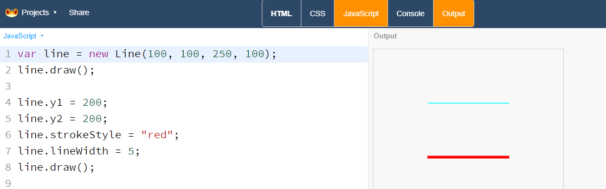
注意的是，和其他图形不一样的是，线条是没有面积的，因此是没有fill方法的。
多边形¶
除了以上简单图形外，还有许许多多的图形，如多边形就是其中的一类。
var polygon = new Polygon(x1, y1, x2, y2, x3, y3, ...);
属性值¶
| 属性值 | 说明 |
| ------------- | ------------ |
| fillStyle | 获取或者设置点填充的样式 |
| strokeStyle | 获取或者设置线条的样式 |
| lineWidth | 获取或者设置线条的宽度 |
多边形的点是一个数组，通过polygon.points获取，每个元素都是一个点。因为多边形往往点数较多，这里不展开了。
方法¶
| 属性值 | 用法 |
| ---------- | ----------------- |
| draw() | 将多边形画在画布上，默认样式为红色 |
| fill() | 将多边形画在画布上，仅填充内容 |
| stroke() | 将圆画在画布上，包含圆周和内部 |
多边形的绘制是依据点的顺序来的，不同的顺序绘制的多边形是不一样的。同时，绘制出来的多边形可能不是简单的凸多边形，这已经不再本书的讨论范围内了。有兴趣的同学可以去了解下多边形的分类，以及多边形的外边和内部的区分。
三角形¶
var triangle = new Triangle(x1, y1, x2, y2, x3, y3);
三角形是多边形的一种特殊情况，即只有3条边的多边形。因此除了定义上，三角形和多边形具有一样的属性和方法。
图形样式¶
图形一般包含边和填充，图形的样式也是由这两块共同组成。
线条和填充¶
图形的线条和填充分别由strokeStyle和fillStyle这两个属性来决定
颜色常量¶
fillStyle与stokeStyle可以设置为表示颜色的字符串常量，从而可以直接设置图形的颜色。
一些常见的颜色的常量有aqua、black、blue、fuchsia、gray、green、lime、maroon、navy、olive、purple、red、silver、teal、white、yellow。

实例：颜色指示板¶
在使用颜色时，有时候我们需要把它们都列出来，这样才能更准确的选择需要的颜色。那我们就来做一个颜色的指示板吧。
var colors = ["aqua", "black", "blue", "fuchsia", "gray", "green", "lime", "maroon", "navy", "olive", "purple", "red", "silver", "teal", "white", "yellow"];
var crect = new Rectangle(10, 10, 200, 25);
var cname = new Text("color", 20, 28);
for(var i=0; i<colors.length; i++){
crect.fillStyle = colors[i];
cname.src = colors[i];
crect.fill();
cname.fill();
crect.y += 30;
cname.y += 30;
}
展示效果

RGB值¶
如果用放大镜看显示器的屏幕，会发现屏幕的每个点都是由3个颜色组成，分别是
- Red, 红色
- Green，绿色
- Blue，蓝色
而这3个颜色的首字母组合，即RGB，这也是RGB值的由来。在RGB值的组成中，每一个数字分布代表了每个颜色的强弱，0代表关闭，255代表最高。
有了这3个基本的颜色，按照亮度的不同，就以组成各种个样的颜色。
实例：设置矩形边的颜色¶
var rect = new Rectangle(10, 10, 200, 100);
rect.strokeStyle = RGB(150, 100, 0);
rect.stroke();
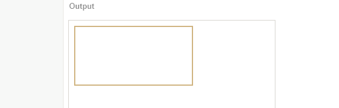
RGB的另外一种写法是“#FFFFFF"，在这里，FFFFFF是一个16进制的数字，每两位代表了一种颜色的高低。FF代表了255，在16进制中，F代表了15，因此FF的计算方式是
15(F的十进制数值) * 16(16进制) + 15(F的十进制数值) = 255
同样，如果将一个十进制的数字转为16进制，计算方式反过来即可，如169在16进制中表示为A9
169 ÷ 16 = 10 ... 9 (余数) = A9(16进制)
补充知识：16进制
在2进制中，我们用0, 1来代表不同的数值
在10进制中，我们用0, 1, 2, 3, 4, 5, 6, 7, 8, 9来代表不同的数值
在16进制中，我们用0, 1, 2, 3, 4, 5, 6, 7, 8, 9, A, B, C, D, E, F来代表从小到大的数值
进制转换¶
不同的进制可以通过计算来转换，比如
在JavaScript中，可以用parseInt这个函数可以将不同进制的字符串转为数字，默认情况下，parseInt将一个字符串转为10进制的数字。
parseInt('1111', 2) //=> 15
parseInt('15') // => 15
parseInt('15', 10) //=> 15
parseInt('15', 16) //=> 22
透明度¶
在生活中，关于透明度最常见的例子就是玻璃了，我们可以透过不一样颜色玻璃看到一个不一样颜色的世界。汽车玻璃拥有不同的透明度，在减弱光线的同时，仍能够看到玻璃后面的物体。如果我们将一个图形设置为一定的透明度，那么我们就可以看到图形后面的其他图形。
透明度的数值从0到1，0代表完全透明，即什么都看不见，1代表全不透，是图像透明度的默认值。
在Canvas中，图像的透明度用globalApha来表示，设置图形的globalAlpha值即可获得不同的透明度。
var rect = new Rectangle(10, 10, 200, 100);
rect.globalAlpha = 0.1;
rect.draw();
实例：做一个调色板¶
var circle = new Circle(200, 150, 100);
circle.globalAlpha = 0.6;
circle.fillStyle = "#0000FF";
circle.fill();
circle.x = 150;
circle.y = 250;
circle.fillStyle = "#00FF00";
circle.fill();
circle.x = 250;
circle.y = 250;
circle.fillStyle = "#FF0000";
circle.fill();
显示效果

思考：绘制图形时，顺序不一样，产生的图形是否会不一致，为什么？
RGBA值¶
RGBA值是RGB的扩充，在使用颜色时可以直接制定该颜色的Alpha值。
var rect.fillStyle = "rgba(255, 255, 0, 0,5)";
前三位对应的是RGB值，第四位即透明度值
透明度还是RGBA值
设置透明度可以通过globalAlpha或者rgba值来设置，这两者都可以达到一样的效果，同时两者可以相互叠加。使用globalAlpha值能够快速获取以及修改到透明度值，所以一般情况下，我们建议使用globalAlpha这个属性。
实例：妙笔生花¶
var circle = new Circle();
function randomInt(n){
return Math.floor(Math.random() * n);
}
function randomRGBA(){
return RGBA(randomInt(255), randomInt(255), randomInt(255), Math.random())
}
Mouse.move = function(){
circle.x = Mouse.x;
circle.y = Mouse.y;
circle.r = 10 + 20 * Math.random();
circle.fillStyle = randomRGBA();
circle.fill();
};
展示效果，但鼠标在画布上移动时，便会随机的绘制出各种图案来，步步生花。
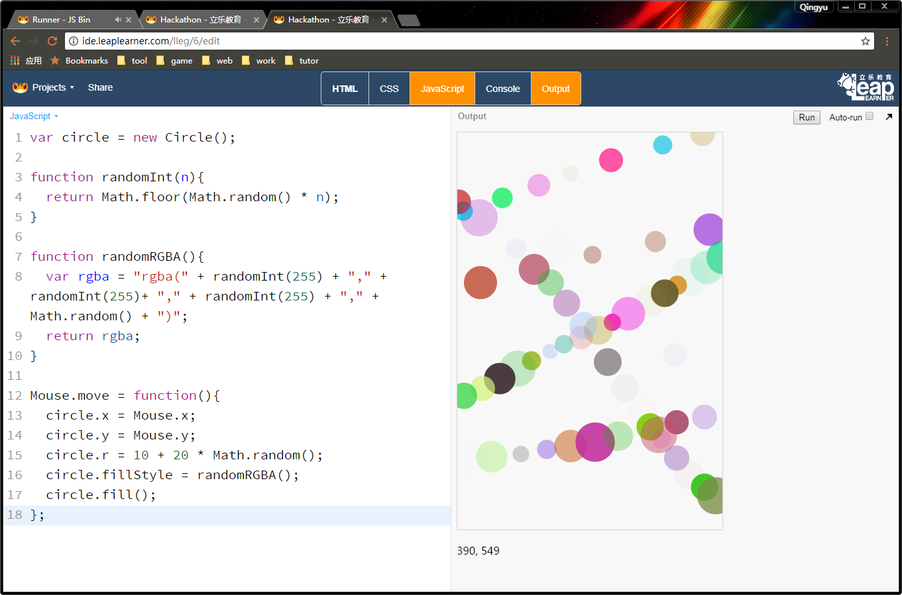

HSLA¶
虚线¶
图形的setLineDash方法可以用来设置虚线条，它接受一个数组对象，按照数组的顺序，轮流绘制线条的实部、虚部。
var line = new Line(100, 100, 300, 100);
line.setLineDash([5, 10]);
line.stroke();

透明度¶
设置图形的globalAlpha可以改变图形的透明度，默认为1，设置区间：0~1。
叠加方式¶
设置图形的globalCompositeOperation属性可以设定图像的叠加方式。机制比较复杂，不建议使用。
渐变色¶
在上面的例子中，我们图形的颜色是单一的。而在实际生活中，颜色往往都不是均匀的。我们可以创建一个变化的颜色来实现这个效果。
实例：渐变色¶
var grd = ctx.createLinearGradient(0,0,175,50);
grd.addColorStop(0,"#FF0000");
grd.addColorStop(1,"#00FF00");
var rect = new Rectangle(10, 10, 175, 50);
rect.fillStyle = grd;
rect.draw();
渐变色效果

addColorStop是在图像的特定位置创建出制定的颜色，中间的变化则由计算机自动完成。
通过添加更多的颜色，我们可以创建出更多特殊的渐变色。
彩虹是难得一见的奇观，一般只有雨过天晴的时候才会出现，现在，我们就来创建一个彩虹出来。
实例：彩虹¶
canvas.width = 600;
canvas.height = 400;
var grd = ctx.createLinearGradient(0,0,100,10);
grd.addColorStop(0,"lightblue");
grd.addColorStop(1/8,"red");
grd.addColorStop(2/8,"orange");
grd.addColorStop(3/8,"yellow");
grd.addColorStop(4/8,"green");
grd.addColorStop(5/8,"cyan");
grd.addColorStop(6/8,"blue");
grd.addColorStop(7/8,"purple");
grd.addColorStop(1,"lightblue");
var sky = new Rectangle(0, 0, 600, 400);
sky.fillStyle = "lightblue";
sky.fill();
var rect = new Rectangle(0, 0, 100, 10);
rect.fillStyle = grd;
rect.translate(0, 400);
rect.setAnchor(300, 400);
for(var i=0; i<180; i+=1){
rect.rotate(i);
rect.fill();
}
一条漂亮的彩虹出来啦
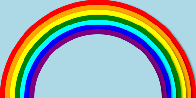
贴图与动画¶
在创作过程中，我们更多的会运用到很多色彩丰富的图片，而不仅仅是几何图形。在这一章节里，我们将学习怎么使用图片来创作。
图片¶
在网页上，图片一般被保存在服务器上，在需要的时候他们会被加载并显示在网页上。每个网络上的图片，都有一个url地址，这个地址告诉了浏览器该到哪里去获取这个地址。
如下面就是一个图片的链接，如果你直接打开它，那么你就可以直接看到这张图片了。
http://
在Canvas中，我们定义了一个图片类Sprite，它需要5个参数来确定这个张图片。第一个是图片的url地址，后面4个参数和矩形一样，用来确定图片的位置和大小。
var sprite = new Sprite(src, x, y, width, height)
例子：图片的绘制
加载¶
因为贴图需要一定的时间加载，所以需要重新执行运行才能成功看到图片显示出来。
贴图资源的加载是有一定延迟的，而代码的执行非常的快，因此在代码执行前图片可能还未加载成功。我们增加了一个资源加载的函数loadRssAndRun，它能知道我们用了那些图片并且在项目代码执行前加载好资源。
var sprite = new Sprite("", 0, 0, 100, 100);
function main(){
sprite.draw();
}
loadRssAndRun(main);
序列帧动画¶
我们知道，动画是因为计算机快速绘制不同的图形而形成的。如果计算机快速更改的是同一个东西的不同时刻的图像，那么，就会让这个东西动起来了。
下面是一张食人花的图，它一共有7个动作，从第一张图到最后一张图，我们发现食人花做了一个张开又合上的动作。下面我们就来看怎么让食人花动起来。

定义¶
第一步，我们使用Animation这个类，和Sprite类似，Animation需要图片的地址和其他4个参数来确定图片以及位置。
var animation = new Animation(src, x, y, width, height);
animation.setFrame(sx, sy, swidth, sheight, culumn, row)
第二步，我们需要设置这个动画的各个参数，否则计算机将不知道怎么去播放这个动画。
- sx，sy: 动画左上角的偏移量
- swidth，sheight：每一个动画的宽度和高度
- culumn，row：动画的帧数在图片上的列数和行数
实例：动画介绍¶
下面是一个动画的介绍课件，使用动画原理制作，展示了动画是如何制作出来的。
var url = "http://llcs-1252287760.cossh.myqcloud.com/";
var width = 60;
var height = 60;
var frameCount = 5;
var row = 1;
var speed = 2;
var image = new Sprite(url+"animations/fire.png", 0, 50, width*5, height);
var fire = new Animation(url+"animations/fire.png", 0, 150, width, height);
fire.setFrame(0, 0, 77, 84, frameCount, row);
// shiftX, shiftY, frameX, frameY, columns, rows
fire.setSpeed(speed); // Animation frame speed
var rect = new Rectangle(0, 50, width, height);
var n=0;
rect.update = function(){
rect.x = width * (Math.floor(n++*speed/60) % 5);
};
function main(){
canvas.clear();
rect.update();
image.draw();
rect.stroke();
fire.draw();
nextFrame(main);
}
loadRssAndRun(main);
音乐与音效¶
好的项目离不开音效，合适的音效可以让一个项目发挥出200%的效果。
var music = new Audio();
music.src = "ddd.mp3"
music.play();
属性和方法
| 属性 | 作用 | | | ---------------- | ------------- | ---- | | src | 获取或者设置音乐链接地址 | | | oncanplaythrough | 在音效加载结束后使用该方法 | | | | | |
音乐¶
背景音乐一般是长度较长的音乐，且需要循环播放。我们可以将音效的loop属性设置为true，这样只要播放一次就可以了。
var music = new Audio();
music.src = "ddd.mp3"
music.loop = true;
music.play();
音效¶
无论是音乐还是音效，浏览器在加载时都需要耗费一定的时间，因此一般都是通过异步加载的。因此只有在加载结束后才能进行播放。一般通过oncanplaythrough函数来调用播放音效。
如果是音效，我们可以在项目执行之前进行加载。本书不涉及到资源的管理和加载，如果有兴趣，可以去网上了解更多预加载的知识。
实例：色阶钢琴¶
var url = "http://llcs-1252287760.cossh.myqcloud.com/Piano/";
var urls = [ "40-C.mp3", "42-D.mp3", "44-E.mp3", "45-F.mp3", "47-G.mp3", "49-A.mp3", "51-B.mp3"];
var Key = Rectangle;
Key.prototype.click = function(){
//this.audio.currentTime = 0;
this.audio.play();
};
for(var i=0; i<urls.length; i++){
var key = new Key(0, 550/7*i, 350, 550/7);
key.fillStyle = RGB(0, 200-20*i, 200-20*i);
key.audio = new Audio();
key.audio.src = url + urls[i];
key.fill();
}
事件¶
鼠标事件¶
事件驱动在JavaScript中是非常常见的一种程序设计模式，通过监测事件的发生，调用预定的函数，从而实现异步执行的效果。
比如说，当鼠标在画布上移动时，鼠标的坐标值会随之而变，这就是一个简单的事件在驱动着坐标值不断的发生变化。
Mouse的属性
| 属性 | 描述 | | ---- | ------------------ | | x | 鼠标当前的x值，可以在画布左下角看到 | | y | 鼠标当前的y值，可以在画布左下角看到 |
点击事件
当鼠标在画布上点击时，就会触发click事件，如果配置了Mouse.click函数，那么该函数就会执行。
实例：点击成图¶
这个项目的目标是创建一个空白的画布，当鼠标在画布上面点击时，就会在鼠标的位置绘制一个圆圈。
第一步，我们需要创建一个圆，这里我们可以创建一个默认的圆图形。
var circle = new Circle();
第二步，定义一个绘制圆的函数drawEvent，因为我们要将圆绘制在鼠标的位置，因此我们要将圆中心设置为鼠标的位置。
Mouse对象，即鼠标，有两个属性x和y，他们会随着鼠标的移动而发生变化，因此我们只要直接使用这两个属性就可以了。
function drawEvent(){
circle.x = Mouse.x;
circle.y = Mouse.y;
circle.draw();
}
第三步，将函数绑定给click事件
Mouse.click = drawEvent;
完整代码如下，我们用简单的9行代码，就完成了这个例子。
var circle = new Circle();
function drawEvent(){
circle.x = Mouse.x;
circle.y = Mouse.y;
circle.draw();
}
Mouse.click = drawEvent;
一般情况下，我们可以省略函数名，直接定义一个匿名函数，可以简单写成。
var circle = new Circle();
Mouse.click = function(){
circle.x = Mouse.x;
circle.y = Mouse.y;
circle.draw();
}
点击画布，就会在画布上留下一个圆圈。

移动事件¶
当鼠标移动时，就会触发move事件。只要我们定义了move函数，那么该函数就会执行。
实例：写字板¶
Mouse的事件
手机上的事件
如果应用需要在手机上运行，需要特别注意事件的区别。在手机上，没有鼠标的存在，只有点击屏幕后才有移动事件的触发。
电脑：Move -> Down -> Move -> Up/Click -> Down
手机：Down -> Move -> Up/Click
所以为手机开发应用时，我们应该小心的使用这些事件的顺序
实例：点击英雄¶
插入图片
第一步，我们定义两个图片，使用图片对象的draw方法将图片绘制在画布上。
var bg = new Sprite("http://orjajlo36.bkt.clouddn.com/backgroundimage2.jpg", 0, 0, 350, 550);
var item = new Sprite("http://ou1htxdl4.bkt.clouddn.com/coin.png", 150, 100, 50, 50);
bg.draw();
item.draw();
点击执行，就可以将这两张图片绘制在画布上了。
行动起来
接下来，就是让物体开始运动起来了。画布上，我们每隔一段时间(16.7ms)将图形重新绘制一次，因为频率非常块，看起来就像是动起来一样。
这里我们需要先定义一个GameLoop函数，它的作用是在每一帧里绘制图形，同时在下一帧中调用自己。
function GameLoop(){
item.y += 1;
bg.draw();
item.draw();
nextFrame(GameLoop);
}
loadRssAndRun(GameLoop);
在GameLoop中，我们让物体的y值每次都增加一，以达到每次往下移动的效果。最后，我们用一个函数loadRssAndRun(GameLoop);来加载图片并且开始执行这个循环。
完整代码如下：
var bg = new Sprite("http://orjajlo36.bkt.clouddn.com/backgroundimage2.jpg", 0, 0, 350, 550);
var item = new Sprite("http://ou1htxdl4.bkt.clouddn.com/coin.png", 150, 100, 50, 50);
function GameLoop(){
item.y += 1;
bg.draw();
item.draw();
nextFrame(GameLoop);
}
loadRssAndRun(GameLoop);
点击事件
在点中物体时，我们需要让物体消失，然后刷新出一个新的物体。事实上，我们不用这么麻烦，把物体的坐标修改为0就可以了。
item.click = function(){
item.y = 0;
};
随机位置
每次都是固定的位置显然不好玩，让我们同时修改下物体的水平位置，使用一个随机的概念。Math.random()会产生一个0到1的随机数，乘以300，即随机生成一个0到300的随机数。
item.click = function(){
item.y = 0;
item.x = Math.random() * 300;
};
显示分数
接下来就是记录游戏的分数了。让我们新增一个变量score，初始值为0。
var score = 0;
数字是没法直接显示出来的，我们需要将数字转为字符串，利用JavaScript中字符串＋数字，自动将数字转为字符串的特性，我们可以实现数字的转换。
var scoreMsg;
function GameLoop(){
item.y += 1;
scoreMsg = "score:" + score;
bg.draw();
item.draw();
scoreMsg.draw();
nextFrame(GameLoop);
}
当然，别忘了在成功点击物体时增加分数，否则分数就不会增加啦。
item.click = function(){
item.y = 0;
item.x = Math.random() * 300;
score++;
};
完整代码如下
var bg = new Sprite("http://orjajlo36.bkt.clouddn.com/backgroundimage2.jpg", 0, 0, 350, 550);
var item = new Sprite("http://ou1htxdl4.bkt.clouddn.com/coin.png", 150, 100, 50, 50);
var score = 0;
var scoreMsg;
function GameLoop(){
item.y += 1;
scoreMsg = "score:" + score;
bg.draw();
item.draw();
scoreMsg.draw();
nextFrame(GameLoop);
}
loadRssAndRun(GameLoop);
item.click = function(){
item.y = 0;
item.x = Math.random() * 300;
score++;
};
播放声音
没有声音，再好的戏也出不来。让我们来增加两个声音，背景音乐和点击音效，这里增加了两个新的声音对象
var bgm = new Audio();
bgm.src = "http://oq2qlcey8.bkt.clouddn.com/bgm.mp3";
var clickSound = new Audio();
clickSound.src = "http://llcs-1252287760.cossh.myqcloud.com/audio/gold.mp3";
背景音乐我们需要让它循环播放，因此设置loop属性为true
var bgm = new Audio();
bgm.src = "http://oq2qlcey8.bkt.clouddn.com/bgm.mp3";
bgm.loop = true;
bgm.play();
而物体点击音效则是在点击的时候播放，因此我们把它加在点击时
item.click = function(){
item.y = 0;
item.x = Math.random() * 300;
score++;
clickSound.play();
};
最终代码
var bg = new Sprite("http://orjajlo36.bkt.clouddn.com/backgroundimage2.jpg", 0, 0, 350, 550);
var item = new Sprite("http://ou1htxdl4.bkt.clouddn.com/coin.png", 150, 100, 50, 50);
var bgm = new Audio();
bgm.src = "http://oq2qlcey8.bkt.clouddn.com/bgm.mp3";
bgm.loop = true;
bgm.play();
var clickSound = new Audio();
clickSound.src = "http://llcs-1252287760.cossh.myqcloud.com/audio/gold.mp3";
var score = 0;
var scoreMsg;
function GameLoop(){
item.y += 1;
scoreMsg = "score:" + score;
bg.draw();
item.draw();
scoreMsg.draw();
nextFrame(GameLoop);
}
loadRssAndRun(GameLoop);
item.click = function(){
item.y = 0;
item.x = Math.random() * 300;
score++;
clickSound.play();
};
代码重构
在进入下一章节前，我们先对我们的程序进行一个小小的重构。在改变速度这里，我们使用了这么一行代码
item.y += 1;
这里1代表的是速度，但是并不直观。所以我们定义一个变量speed来表达它。
var scoreMsg;
var speed = 1;
...
item.y += speed;
难度提升
接下来，就是我们对游戏的难度进行修改。我们在每一次分数增加的时候去提高物体掉落的速度，这样就能提高游戏难度了！
item.click = function(){
item.y = 0;
item.x = Math.random() * 300;
score++;
speed += 1;
clickSound.play();
};
如果你觉得难度变化太大，你可以降低这个数值，让速度的增长变的慢一点。
游戏结束
游戏结束时，我们在屏幕上写上Game Over。
function GameOver(){
'Game Over'.draw(120, 300, "white");
}
怎么判断游戏结束呢，先用一段伪代码来表示
如果物体超出了画布:
游戏结束
其他情况下：
继续游戏循环
在JavaScript中，就可以写成
function GameLoop(){
...
if(item.y > canvas.height)
GameOver();
else
nextFrame(GameLoop);
}
重新开始
重新开始游戏循环前，我们要做这几件事情
- 把分数清零
- 把物体放回到最上方
- 把速度变为最初的速度
最后执行游戏循环。
function GameStart(){
score = 0;
item.y = 0;
speed = 1;
GameLoop();
}
那什么时候触发游戏重新开始呢，当然是游戏结束的时候了。我们需要在游戏结束时添加一个按钮来激活它。
var retry = new Sprite( "http://osykyzwcn.bkt.clouddn.com/SHAYUx0001.png", 120, 300, 100, 50);
retry.click = GameStart;
function GameOver(){
"Game Over".draw(120, 160, "white");
retry.draw();
}
当游戏结束的时候，这个按钮就会被绘制到画布上，点击就可以重新开始游戏啦。
最终代码
var bg = new Sprite("http://orjajlo36.bkt.clouddn.com/backgroundimage2.jpg", 0, 0, 350, 550);
var item = new Sprite("http://ou1htxdl4.bkt.clouddn.com/coin.png", 100, 0, 60, 60);
var bgm = new Audio();
bgm.src = "http://oq2qlcey8.bkt.clouddn.com/bgm.mp3";
bgm.loop = true;
bgm.play();
var sound = new Audio();
sound.src = "http://llcs-1252287760.cossh.myqcloud.com/audio/gold.mp3";
var speed = 1;
var score = 0;
var hiscore = 0;
item.click = function(){
score += 1;
speed += 1;
sound.currentTime = 0;
sound.play();
item.y = 0;
item.x = Math.random() * 300;
};
function GameStart(){
item.y = 0;
score = 0;
speed = 1;
GameLoop();
}
function GameLoop(){
item.y += speed;
bg.draw();
item.draw();
var scoreMsg = "Score: " + score;
scoreMsg.draw();
if(item.y > canvas.height)
GameOver();
else
nextFrame(GameLoop);
}
var retry = new Sprite( "http://osykyzwcn.bkt.clouddn.com/SHAYUx0001.png", 120, 300, 100, 50);
retry.click = GameStart;
function GameOver(){
"Game Over".draw(120, 160, "white");
retry.draw();
}
loadRssAndRun(GameStart);
键盘事件¶
和鼠标类似，键盘也会触发事件。
down：当按键被按下时触发up：当按键松开时触发press：当按键被按下并且松开时触发
方法一：
Key.a.press = function(console.log('a'));
Key['a']press = function(console.log('a'));
Key是一个对象，因此以上两种方式都可以实现对按键a的监听。
一些特别的键名称
| 按键 | 名称 | 备注 |
| ----- | ---------- | -------- |
| ↑ | ArrowUp | 无press事件 |
| ↓ | ArrowDown | 无press事件 |
| ← | ArrowLeft | 无press事件 |
| → | ArrowRight | 无press事件 |
| Esc | Escape | |
| 空格 | Space | |
| 回车键 | Enter | |
手势事件¶
另外，手机上的键盘需要触发输入才能够显示，因此我们也要避免使用键盘输入。
leapjs包含了对手势的基本支持功能，在手机上，支持4个简单的滑动手势，上下左右，分别对应键盘的上下左右键。使用了这些按键的程序，在手机上可以使用滑动手势来控制。
var rect = new Rectangle(30, 30, 100, 100);
Key.ArrowLeft.down = function(){ rect.x -= 10;};
Key.ArrowRight.down = function(){ rect.x += 10;};
Key.ArrowUp.down = function(){ rect.y -= 10;};
Key.ArrowDown.down = function(){ rect.y += 10;};
function main(){
canvas.clear();
rect.draw();
requestAnimationFrame(main);
}
main();
在这个例子中，我们可以使用键盘的方向键来移动矩形的位置，也可以在手机上用移动手势来控制。
图形变换¶
所有的图形都可以在画布上按照一定的规律进行变换
平移¶
var circle = new Circle(0, 0, 100);
circle.translate(100, 100);
circle.draw();
图形调用translate即可在画布上进行偏移。
如果需要对线条、多变形进行移动时，就可以使用该方式，而不用
var polygon = new Polygon(0, 100, 0, 150, 50, 100, 100, 100, 200, 50);
polygon.translate(100, 100);
polygon.draw();
组合图形的统一偏移
用位移做一个窗口震动效果
中心点与旋转¶
图形在平面上进行旋转后可以得到不一样的效果。
要明确旋转的位置，我们需要明确旋转的中心点和方向。默认情况下，我们将原点(0, 0)设置为旋转的中心点。将顺时针方向的角度规定为正方向。
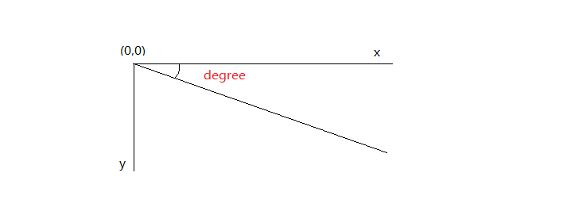
实例：旋转的矩形¶
var rect = new Rectangle(100, 100, 200, 100);
rect.draw();
rect.rotate(10);
rect.draw();
可以看到，矩形以原点为中心旋转了10°。

那么，我们能不能让矩形以矩形的中心点进行旋转呢，当然可以啦，我们只要把矩形的旋转点设置在矩形的中心就可以了。
实例：旋转的矩形II¶
为了更明显的看出区别，这次我们把旋转的角度加大到30°，来看看会有怎么样的效果。
var rect = new Rectangle(100, 100, 200, 100);
rect.draw();
rect.setAnchor(200, 150);
rect.rotate(30);
rect.draw();
Bingo! 矩形按照我们的想法旋转起来了。
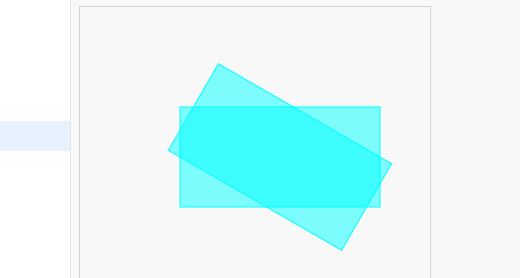
大家可以想一想，如果旋转度数为负数会是怎么样的呢，旋转读数超过360度呢，又会是怎么样的，快来试一试吧。
实例：时钟¶
var dashboard = new Sprite("http://ou1htxdl4.bkt.clouddn.com/clk/biaopan-01.png", 100, 100);
var h_line = new Line(200, 160, 200, 200);
var m_line = new Line(200, 140, 200, 200);
var s_line = new Line(200, 120, 200, 200);
s_line.lineWidth = 2;
m_line.lineWidth = 3;
h_line.lineWidth = 5;
s_line.strokeStyle = "red";
m_line.strokeStyle = 'green';
h_line.strokeStyle = 'blue';
// 设定锚点（旋转中心点）
s_line.setAnchor(200, 200);
m_line.setAnchor(200, 200);
h_line.setAnchor(200, 200);
var h, m, s;
var h_degree, m_degree, s_degree;
var t;
function updateTime(){
t = new Date();
h = t.getHours();
m = t.getMinutes();
s = t.getSeconds();
h_degree = h * 360 / 12;
m_degree = m * 360 / 60;
s_degree = s * 360 / 60;
}
function main(){
updateTime();
canvas.clear();
dashboard.draw();
h_line.rotate(h_degree);
m_line.rotate(m_degree);
s_line.rotate(s_degree);
h_line.draw();
m_line.draw();
s_line.draw();
}
setInterval(main, 1000);
放大与缩小¶
我们可以改变矩形的宽高来改变矩形的大小，改变圆的半径来改变圆的大小。但是如果我们要改变其他图形的大小，就有点麻烦了。
不过，我们可以通过修改图像的比例来达到这个效果。
rect.scale(2, 2);
同样的，放大缩小时是以坐标原点作为参考系的，我们可以通过设定锚点来修改。
斜切¶
图像的变换都是通过矩形计算进行的，如果读者想要了解更多图形的变换的知识，欢迎点击一下链接学习更多知识。
平行多边形
利用斜切来定义一个平行多边形
实例：阴影的实现¶
如何让物体看起来更立体
var item = new Rectangle(100, 50, 200, 100);
var shadow = new Rectangle(100, 100, 200, 50);
shadow.setAnchor(100, 150);
shadow.skew(0, 0.6);
shadow.fillStyle = "#cccccc";
shadow.fill();
item.draw();
效果如下：

实例
翻页效果的实现
菱形
如何定义一个菱形
##物理效果
碰撞¶
所有图形类都有一个方法collide，接受一个参数，必须是另外一个图形类实例，如果两个图形相互碰撞，那么返回碰撞点坐标。否则返回false
rect.collide(circle);
坐标点是一个对象，因此可以直接使用if来判断是否发生碰撞。
在图形进行旋转、翻转、平移后，碰撞仍可以进行判断。
图像的碰撞¶
为了提高执行的效率，不提供像素级别的碰撞判断，图片的碰撞体积默认为图像宽高的0.8（80%），可以通过setCollisionScale来设定碰撞宽高的比例。